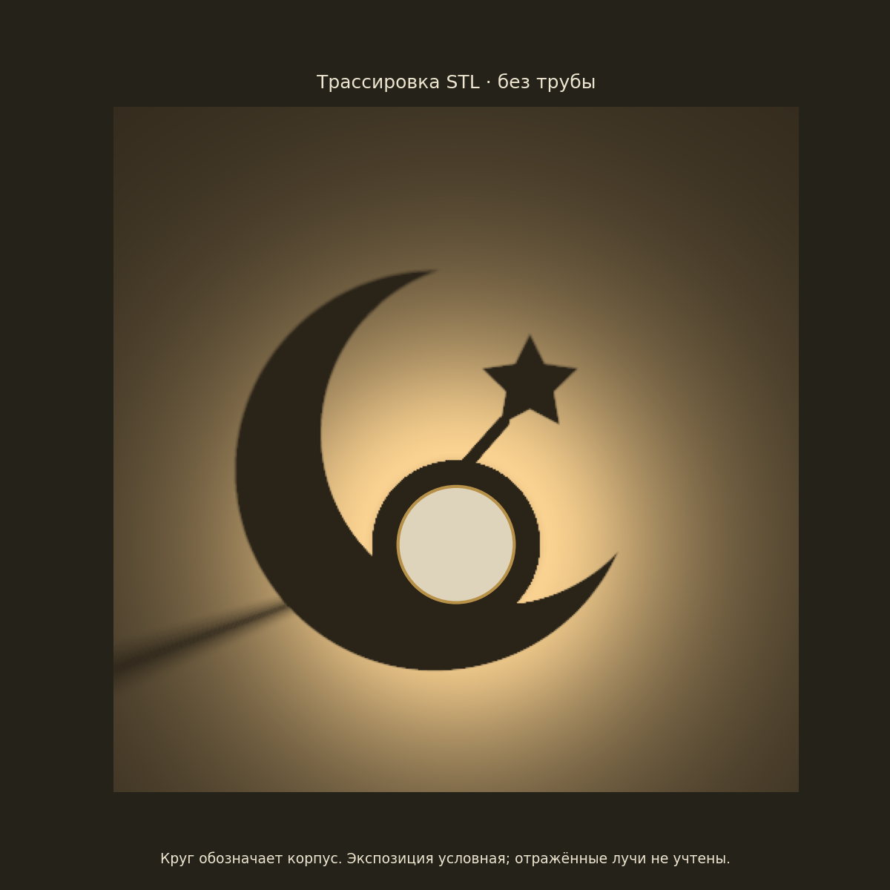

Пять новых теней для Hilal
Один корпус без трубы — пять сменных картриджей. Плавные контуры, единый байонет и отдельный лучевой расчёт для каждого рисунка.
Скачать все 5 STL и проверкиНа изображениях — расчёт от STL всей сборки с условным LED 1×1 мм. Круг обозначает корпус. Тень крепления колпачка включена; реальная печать и LED ещё не испытаны.